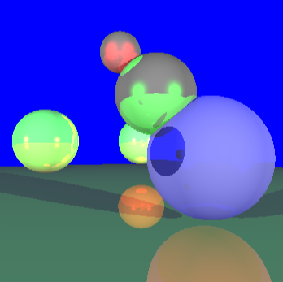

Programming Language(s): Java
An application I played a large role in developing. It includes a login form with an account database with user information and account balance. Transactions similar to a bank are made possible and affect the user information and account balance as necessary.